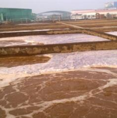
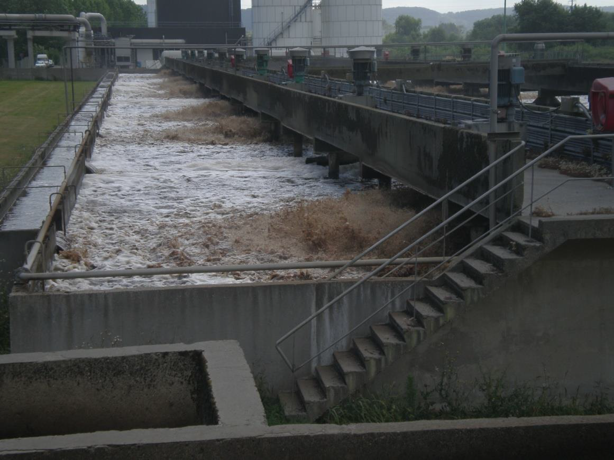
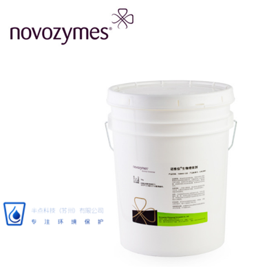
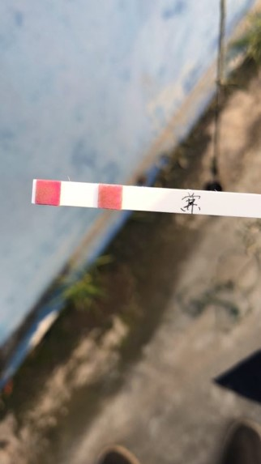

产品中心
丹麦诺维信（Novozymes）生物增效剂全系产品
提供氨氮、总氮、COD 去除菌剂及污水处理整体解决方案
24小时服务热线：15995813412
丹麦诺维信（Novozymes）生物增效剂全系产品
真实数据，经得起验证

某家化工厂氨氮排放超标，分析表明硝化系统崩溃。在诺维信工程师的建议下，在10天时间内，以逐渐减少用量的方式将氨氮去除菌BioRemove …

生产瓦楞纸板的回收制浆造纸厂因难降解COD而排放不达标。该厂曾尝试使用化学氧化方法，但因成本高昂且需要使用额外的加药设备而最终放弃。通过向污…

某家化工厂总氮排放超标，分析表明反硝化系统不正常。在诺维信工程师的建议下，在5天时间内，以逐渐减少用量的方式将反硝化菌BI-Chem Nov…

产品特性BioRemove 5805为功效当前更迅速、更可靠的硝化作用解决方案。利用BioRemove 5805进行生物强化处理会使硝化反应…

华东某化工企业污水系统出现故障，COD和氨氮全部超标，生化池污泥漂浮。通过现场调查分析，发现来水中非正常混入毒性物质造成系统中毒，污泥死亡。…

半点科技（苏州）有限公司专业代理诺维信生物增效剂。BioRemove5150是专门设计用于低营养难降解有机物废水处理的菌种。经验证对于各种污…

半点科技（苏州）有限公司专业从事环境保护，依托丹麦诺维信全球生物增效技术，和其他多种高度集成的污水处理设备，利用化学和微生物等手段帮助提高和改善系统的COD、BOD、氨氮、总氮去除效率，除臭，污泥减量等，成为客户解决水、气、泥治理的技术服务商和产品供应商。同时为制浆造纸提供制程助剂，从而提高生产效率和产品品质。